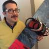

Gallery » 2016
| Clean Shave Day | Week 1 | Week 2 | Week 3 | Stache Bash |
|---|---|---|---|---|
 EcranFilms 19x8.5 RW rs4 reps | | | | |
Nima Aghniaey | | | | |
Adam Alders | | | | |
Ashliedeave AshliedeaveEM | | | | |
Scott Brohman | | |||
Jesse Burcsik | | | | |
Emmettbus Continental Craps | | | | |
JamesBrips Continental Craps | | | | |
gorik534645put Continental Craps | | | | |
Blair Cox | | | | |
Scott Dare | | | | |
Casey Desilets | | | | |
Trudy Donato | | | | |
AlekSSanGT DOT Slicks | | | | |
Amanda Douglas | | | | |
AlinaBAGro Drag Radials | | | | |
Mat Dupont | | | ||
Chris Dziwinski | ||||
Derek Enright | | |  | |
KragosBut Falken | | | | |
Acorn/Little Acorn Families | | | | |
Keith Fenwick | | | | |
Jeremy Francis | | | | |
Jaya Ganesh | | | | |
Emmettbus General Exclaim UHP | | | | |
Robertson Gibb | | | | |
LoganHix Hankook | | | | |
Paul Hazelwood | | | | |
Todd Headon | | | | |
Mike Hollingworth | | | | |
Jinlei Huo | | | | |
Kevin Jamieson | | | | |
Lee Janson | | | | |
Javier Jorge | | | | |
Dominique Julien | | | | |
Trevor Kealey | | | | |
Haroldhat Khumo Ecstas | | | | |
Ryan Knuth | | | | |
Erik Kulakowsky | | |  | |
LenCHiKS Kumho ASX | | | | |
Al Lavergne | | | | |
Chad Levac | | | | |
Donald Lord | | | | |
Ken M-R | | |||
Justin MacNeil | | | | |
Donald Makori | | | | |
Paz Maoz | | | | |
Kolyarodadia Monster Truck Size | | | | |
Scott Mulligan | | | | |
Muz_DUOby Muz_DUOSK | | | | |
Ryan Neville | | | | |
JanetYP Nitto extreme 555 | | | | |
Joel Nye | | | | |
Neil O'Brien | | | | |
John parker | | | | |
CurtisDen Pirelli PZero | | | | |
Gabriel Queiroz | |  | | |
Vivek Raju | | | | |
ReirdreGep ReirdreGepFG | | | | |
Arthur Robillard | | | | |
Nate Rodgers | | | | |
JanetKU Rubbers | | | | |
Marylou Scott-Smith | | | | |
Scotthof ScotthofNM | | | | |
MarinaSins Stock | | | | |
RaichalFV Stock | | | | |
AniTNe5 Street Radials | | | | |
ThomasThync Street Radials | | | | |
Scott Stuart | | | | |
Brett Tackaberry |  |  | ||
Erik Thorsteinson | | | | |
TimmyNalty TimmyNaltyPY | | | | |
James Tourigny | | | | |
Paul Townsend | | | | |
Rob Villeneuve | |  | | |
Kvas Vladimir | | | | |
Nick Weatherdon | | | | |
Rick White | | | | |
Dan Wiebenga | | | ||
Wayne Winser | | | | |
Mike Wlotzki | | | | |
{kind=link}
{kind=link}
{kind=link}
{kind=link}
{kind=link}
{kind=link}
{kind=link}
{kind=link}
{kind=link}
{kind=link}
{kind=link}
{kind=link}
{kind=link}
{kind=link}
{kind=link}
{kind=link}
{kind=link}
{kind=link}
{kind=link}
{kind=link}
{kind=link}
{kind=link}
{kind=link}
{kind=link}
{kind=link}
{kind=link}
{kind=link}
{kind=link}
{kind=link}
{kind=link}